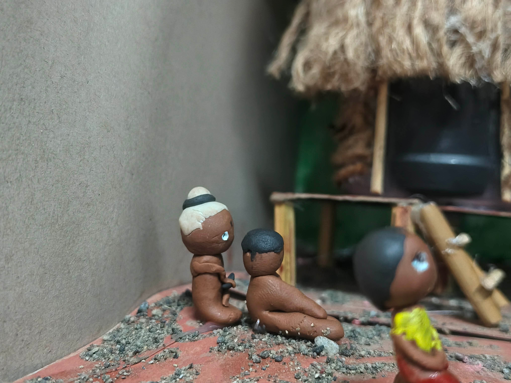

LAND & HOME01 / 04

A PLACE TO GATHER
The house on stilts
At the heart of the model, a raised home stands on sturdy posts beneath a thick thatched roof. The open space below lifts the living area off the ground and makes room for air to move.
FIELD NOTE
Kalinga communities are diverse. House forms and building materials vary from place to place.